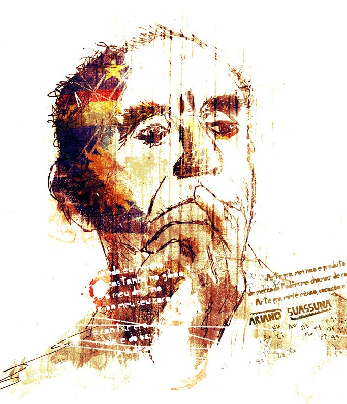

Biografia
| Ariano Suassuna | |
|
Ariano Suassuna foi um escritor, dramaturgo e poeta brasileiro, nascido em 1927 e falecido em 2014. Ele é conhecido por suas obras que retratam a cultura popular nordestina, como a peça teatral "Auto da Compadecida".
Além disso, Suassuna foi um defensor da valorização da cultura brasileira e um crítico das influências estrangeiras na cultura do país. Ele foi um dos fundadores do Movimento Armorial, que buscava resgatar elementos da cultura popular brasileira nas artes. Sua obra é considerada uma importante contribuição para a literatura e o teatro brasileiros. Ariano Vilar Suassuna nasceu em Paraíba do Norte, atual João Pessoa, no dia 16 de junho de 1927, filho de Rita de Cássia Dantas Villar e João Suassuna. Ariano foi casado com Zélia de Andrade Lima, com quem teve seis filhos. Seu pai era então o presidente (seria hoje chamado de governador) do estado da Paraíba. Ariano nasceu nas dependências do Palácio da Redenção, sede do Executivo paraibano. No ano seguinte, o pai deixa o governo da Paraíba, e a família passou a morar no sertão, na Fazenda Acauã, em Sousa. Durante o movimento armado que culminou com a Revolução de 1930, quando Ariano tinha três anos, seu pai João Suassuna foi assassinado por motivos políticos na cidade do Rio de Janeiro, e a família mudou-se para Taperoá, onde morou de 1933 a 1937. Nessa cidade, Ariano fez seus primeiros estudos e assistiu pela primeira vez a uma peça de mamulengos e a um desafio de viola, cujo caráter de "improvisação" seria uma das marcas registradas também da sua produção teatral. |

Nome Completo: Ariano Vilar Suassuna Data de Nascimento: 16 de junho de 1927 Data de Falecimento: 2014 Onde Nasceu: Paraíba do Norte |
Página - 1